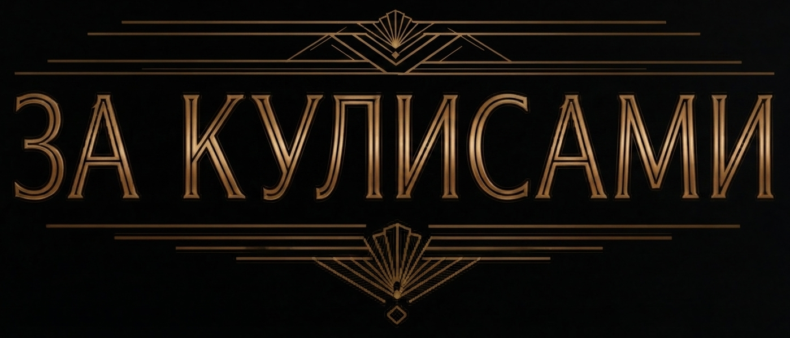

Здесь собраны материалы, непосредственно относящиеся к текстам первого и второго томов проекта «Театр теней», но по разным причинам в них не вошедшие. Они помогут разобраться в хитросплетениях сюжетных линий, причинно-следственных связях внешнеполитического контура и обстоятельствах, в которых оказываются герои.

О проекте
Пересказ всех событий в той последовательности, в какой они изложены в текстах.
Историческая справка
Описание внешнеполитических обстоятельств, вокруг которых развертываются события томов.
Документы проекта
Материалы, изначально созданные как часть текста, но перенесенные в закулисье.
Комментарий эксперта
Субъективный взгляд на скрытые слои событий и ключевые артефакты романа.